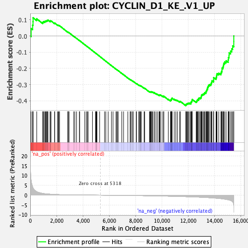
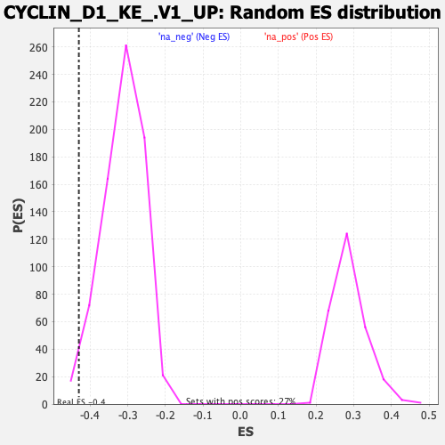

| | | Dataset | DE_genes |
| Phenotype | NoPhenotypeAvailable |
| Upregulated in class | na_neg |
| GeneSet | CYCLIN_D1_KE_.V1_UP |
| Enrichment Score (ES) | -0.42976767 |
| Normalized Enrichment Score (NES) | -1.3738372 |
| Nominal p-value | 0.021947874 |
| FDR q-value | 0.2045067 |
| FWER p-Value | 0.953 |
Table: GSEA Results Summary

Fig 1: Enrichment plot: CYCLIN_D1_KE_.V1_UP
Profile of the Running ES Score & Positions of GeneSet Members on the Rank Ordered List
| PROBE | GENE SYMBOL | GENE_TITLE | RANK IN GENE LIST | RANK METRIC SCORE | RUNNING ES | CORE ENRICHMENT | | 1 | IFITM1 | | | 66 | 7.728 | 0.0461 | No |
| 2 | HBA2 | | | 181 | 4.265 | 0.0664 | No |
| 3 | DNASE1 | | | 210 | 3.689 | 0.0887 | No |
| 4 | LCN2 | | | 216 | 3.629 | 0.1120 | No |
| 5 | ADRA2A | | | 490 | 1.794 | 0.1059 | No |
| 6 | HSPA1B | | | 948 | 0.928 | 0.0820 | No |
| 7 | TROAP | | | 973 | 0.894 | 0.0863 | No |
| 8 | CDKN2A | | | 1013 | 0.836 | 0.0892 | No |
| 9 | FOSL2 | | | 1098 | 0.755 | 0.0886 | No |
| 10 | KDM5C | | | 1135 | 0.733 | 0.0911 | No |
| 11 | TRIM25 | | | 1185 | 0.692 | 0.0924 | No |
| 12 | TFAP2A | | | 1244 | 0.646 | 0.0928 | No |
| 13 | PIGC | | | 1270 | 0.627 | 0.0953 | No |
| 14 | CD52 | | | 1318 | 0.605 | 0.0961 | No |
| 15 | THY1 | | | 1346 | 0.588 | 0.0982 | No |
| 16 | COL5A2 | | | 1514 | 0.511 | 0.0906 | No |
| 17 | PTS | | | 1516 | 0.511 | 0.0939 | No |
| 18 | CCL20 | | | 1581 | 0.479 | 0.0928 | No |
| 19 | HK3 | | | 1854 | 0.370 | 0.0775 | No |
| 20 | APOC1 | | | 1856 | 0.369 | 0.0798 | No |
| 21 | EIF5A | | | 2067 | 0.305 | 0.0681 | No |
| 22 | CDS1 | | | 2125 | 0.290 | 0.0662 | No |
| 23 | NFE2 | | | 2176 | 0.273 | 0.0647 | No |
| 24 | ALDH3A2 | | | 2225 | 0.261 | 0.0633 | No |
| 25 | ZYX | | | 2857 | 0.155 | 0.0231 | No |
| 26 | RAB31 | | | 2878 | 0.152 | 0.0228 | No |
| 27 | SLC6A3 | | | 2886 | 0.151 | 0.0233 | No |
| 28 | CEBPD | | | 2951 | 0.145 | 0.0201 | No |
| 29 | BCL9 | | | 3306 | 0.114 | -0.0023 | No |
| 30 | CELA2B | | | 3391 | 0.107 | -0.0071 | No |
| 31 | SLC38A3 | | | 3522 | 0.097 | -0.0150 | No |
| 32 | PLCB2 | | | 3733 | 0.086 | -0.0281 | No |
| 33 | KIFC1 | | | 3758 | 0.084 | -0.0292 | No |
| 34 | CGREF1 | | | 4140 | 0.062 | -0.0537 | No |
| 35 | PRPH | | | 4260 | 0.055 | -0.0611 | No |
| 36 | ZIC1 | | | 4339 | 0.051 | -0.0658 | No |
| 37 | PTPRH | | | 4396 | 0.048 | -0.0692 | No |
| 38 | AGXT | | | 4726 | 0.030 | -0.0905 | No |
| 39 | GNAI2 | | | 4963 | 0.018 | -0.1058 | No |
| 40 | NRG1 | | | 4994 | 0.016 | -0.1076 | No |
| 41 | LMF2 | | | 5016 | 0.015 | -0.1089 | No |
| 42 | SNRPB2 | | | 5023 | 0.015 | -0.1092 | No |
| 43 | MPHOSPH6 | | | 5071 | 0.012 | -0.1122 | No |
| 44 | BIRC2 | | | 5272 | 0.003 | -0.1253 | No |
| 45 | DMWD | | | 5646 | -0.017 | -0.1495 | No |
| 46 | SLC35D1 | | | 5740 | -0.023 | -0.1554 | No |
| 47 | MMP15 | | | 5921 | -0.034 | -0.1670 | No |
| 48 | DTNA | | | 6170 | -0.051 | -0.1829 | No |
| 49 | GLI1 | | | 6291 | -0.058 | -0.1903 | No |
| 50 | DNASE2 | | | 6514 | -0.074 | -0.2043 | No |
| 51 | REEP5 | | | 6586 | -0.079 | -0.2085 | No |
| 52 | CHRNA5 | | | 6608 | -0.081 | -0.2093 | No |
| 53 | DYRK4 | | | 6684 | -0.087 | -0.2137 | No |
| 54 | POLR2C | | | 6957 | -0.107 | -0.2307 | No |
| 55 | FZD5 | | | 7090 | -0.117 | -0.2386 | No |
| 56 | PPID | | | 7416 | -0.146 | -0.2589 | No |
| 57 | COX17 | | | 7588 | -0.161 | -0.2690 | No |
| 58 | CASP3 | | | 7613 | -0.163 | -0.2695 | No |
| 59 | CYP2E1 | | | 7681 | -0.169 | -0.2728 | No |
| 60 | ARCN1 | | | 7792 | -0.178 | -0.2788 | No |
| 61 | BATF | | | 7813 | -0.180 | -0.2789 | No |
| 62 | EGR3 | | | 8052 | -0.204 | -0.2932 | No |
| 63 | DCAF7 | | | 8068 | -0.205 | -0.2928 | No |
| 64 | REN | | | 8244 | -0.223 | -0.3028 | No |
| 65 | ASNS | | | 8300 | -0.230 | -0.3049 | No |
| 66 | TPTEP1 | | | 8331 | -0.233 | -0.3053 | No |
| 67 | DUSP4 | | | 8386 | -0.238 | -0.3073 | No |
| 68 | MALL | | | 8441 | -0.245 | -0.3092 | No |
| 69 | RUNX1 | | | 8651 | -0.268 | -0.3212 | No |
| 70 | GOT1 | | | 8697 | -0.274 | -0.3223 | No |
| 71 | ST3GAL4 | | | 9057 | -0.318 | -0.3437 | No |
| 72 | CDKN1A | | | 9101 | -0.323 | -0.3444 | No |
| 73 | SNX17 | | | 9134 | -0.326 | -0.3444 | No |
| 74 | ADRA2B | | | 9179 | -0.333 | -0.3451 | No |
| 75 | PLK3 | | | 9188 | -0.334 | -0.3434 | No |
| 76 | DUSP5 | | | 9248 | -0.341 | -0.3450 | No |
| 77 | MAD1L1 | | | 9297 | -0.347 | -0.3459 | No |
| 78 | SUPT5H | | | 9414 | -0.360 | -0.3512 | No |
| 79 | ARL3 | | | 9420 | -0.361 | -0.3491 | No |
| 80 | ZNF787 | | | 9547 | -0.380 | -0.3549 | No |
| 81 | PHF20 | | | 9655 | -0.397 | -0.3593 | No |
| 82 | FHL2 | | | 9779 | -0.414 | -0.3646 | No |
| 83 | STT3A | | | 9832 | -0.422 | -0.3653 | No |
| 84 | TTLL12 | | | 9836 | -0.422 | -0.3627 | No |
| 85 | SLN | | | 9881 | -0.430 | -0.3628 | No |
| 86 | HSPG2 | | | 10021 | -0.450 | -0.3689 | No |
| 87 | GLB1 | | | 10140 | -0.469 | -0.3736 | No |
| 88 | CDR2 | | | 10142 | -0.469 | -0.3706 | No |
| 89 | MAN2A2 | | | 10490 | -0.517 | -0.3899 | No |
| 90 | HSD17B10 | | | 10660 | -0.547 | -0.3974 | No |
| 91 | GGT5 | | | 10664 | -0.548 | -0.3940 | No |
| 92 | RRAS | | | 10715 | -0.555 | -0.3936 | No |
| 93 | ATXN1 | | | 10716 | -0.555 | -0.3900 | No |
| 94 | ETS2 | | | 10744 | -0.559 | -0.3881 | No |
| 95 | CCL23 | | | 10746 | -0.560 | -0.3846 | No |
| 96 | LPIN2 | | | 10781 | -0.564 | -0.3831 | No |
| 97 | PPP3CB | | | 10940 | -0.589 | -0.3896 | No |
| 98 | PCGF2 | | | 11063 | -0.609 | -0.3936 | No |
| 99 | PKD1 | | | 11175 | -0.631 | -0.3967 | No |
| 100 | KIF22 | | | 11346 | -0.666 | -0.4035 | No |
| 101 | SNRPC | | | 11412 | -0.681 | -0.4033 | No |
| 102 | LTBR | | | 11818 | -0.765 | -0.4248 | Yes |
| 103 | CDK6 | | | 11832 | -0.768 | -0.4206 | Yes |
| 104 | CTBP1 | | | 11887 | -0.781 | -0.4191 | Yes |
| 105 | STAM | | | 11924 | -0.791 | -0.4162 | Yes |
| 106 | HSPH1 | | | 11983 | -0.801 | -0.4148 | Yes |
| 107 | CENPB | | | 12043 | -0.813 | -0.4134 | Yes |
| 108 | COX7A1 | | | 12134 | -0.838 | -0.4138 | Yes |
| 109 | THOC1 | | | 12214 | -0.858 | -0.4134 | Yes |
| 110 | THOP1 | | | 12215 | -0.858 | -0.4078 | Yes |
| 111 | TCF12 | | | 12247 | -0.864 | -0.4042 | Yes |
| 112 | BRF1 | | | 12283 | -0.873 | -0.4007 | Yes |
| 113 | DAP | | | 12297 | -0.877 | -0.3959 | Yes |
| 114 | CDR2L | | | 12308 | -0.879 | -0.3908 | Yes |
| 115 | HSF4 | | | 12607 | -0.955 | -0.4040 | Yes |
| 116 | CA4 | | | 12657 | -0.968 | -0.4009 | Yes |
| 117 | PPP5C | | | 12681 | -0.974 | -0.3961 | Yes |
| 118 | RASSF7 | | | 12720 | -0.987 | -0.3921 | Yes |
| 119 | FAM189A2 | | | 12790 | -1.008 | -0.3901 | Yes |
| 120 | AHR | | | 12796 | -1.011 | -0.3838 | Yes |
| 121 | PHKG2 | | | 12864 | -1.033 | -0.3814 | Yes |
| 122 | ID1 | | | 12950 | -1.061 | -0.3801 | Yes |
| 123 | FAM3C | | | 12991 | -1.073 | -0.3757 | Yes |
| 124 | PLOD1 | | | 13001 | -1.076 | -0.3693 | Yes |
| 125 | POLD1 | | | 13018 | -1.082 | -0.3633 | Yes |
| 126 | FGFR4 | | | 13073 | -1.097 | -0.3596 | Yes |
| 127 | PMPCA | | | 13150 | -1.121 | -0.3573 | Yes |
| 128 | MARK3 | | | 13218 | -1.145 | -0.3542 | Yes |
| 129 | PDE4C | | | 13257 | -1.157 | -0.3492 | Yes |
| 130 | TNNT2 | | | 13348 | -1.192 | -0.3473 | Yes |
| 131 | KLC1 | | | 13359 | -1.197 | -0.3401 | Yes |
| 132 | NEK3 | | | 13409 | -1.216 | -0.3354 | Yes |
| 133 | CHKA | | | 13421 | -1.220 | -0.3281 | Yes |
| 134 | SCAP | | | 13473 | -1.243 | -0.3234 | Yes |
| 135 | IFRD2 | | | 13477 | -1.244 | -0.3155 | Yes |
| 136 | AXIN1 | | | 13523 | -1.263 | -0.3102 | Yes |
| 137 | TRIO | | | 13550 | -1.275 | -0.3036 | Yes |
| 138 | PRRC2A | | | 13619 | -1.298 | -0.2995 | Yes |
| 139 | PPIB | | | 13718 | -1.340 | -0.2972 | Yes |
| 140 | MGAT5 | | | 13756 | -1.362 | -0.2907 | Yes |
| 141 | TRAF1 | | | 13786 | -1.377 | -0.2837 | Yes |
| 142 | NPR2 | | | 13805 | -1.383 | -0.2758 | Yes |
| 143 | TSC2 | | | 13928 | -1.436 | -0.2744 | Yes |
| 144 | PTPN3 | | | 13934 | -1.438 | -0.2654 | Yes |
| 145 | COL18A1 | | | 13935 | -1.438 | -0.2560 | Yes |
| 146 | COASY | | | 14119 | -1.547 | -0.2579 | Yes |
| 147 | KLF4 | | | 14148 | -1.566 | -0.2495 | Yes |
| 148 | PFKL | | | 14165 | -1.581 | -0.2402 | Yes |
| 149 | MASP1 | | | 14194 | -1.596 | -0.2316 | Yes |
| 150 | PPM1F | | | 14323 | -1.672 | -0.2291 | Yes |
| 151 | THBD | | | 14484 | -1.776 | -0.2280 | Yes |
| 152 | MED24 | | | 14522 | -1.806 | -0.2186 | Yes |
| 153 | FOXK2 | | | 14570 | -1.845 | -0.2097 | Yes |
| 154 | EPHA2 | | | 14571 | -1.846 | -0.1976 | Yes |
| 155 | E2F4 | | | 14648 | -1.916 | -0.1901 | Yes |
| 156 | DGKD | | | 14674 | -1.942 | -0.1791 | Yes |
| 157 | PKN1 | | | 14700 | -1.970 | -0.1679 | Yes |
| 158 | KCNAB2 | | | 14777 | -2.043 | -0.1595 | Yes |
| 159 | KCTD2 | | | 14884 | -2.141 | -0.1525 | Yes |
| 160 | RGS3 | | | 15041 | -2.368 | -0.1472 | Yes |
| 161 | KAT5 | | | 15058 | -2.394 | -0.1327 | Yes |
| 162 | TGFBR2 | | | 15107 | -2.482 | -0.1196 | Yes |
| 163 | GCHFR | | | 15111 | -2.487 | -0.1036 | Yes |
| 164 | ABLIM1 | | | 15224 | -2.723 | -0.0932 | Yes |
| 165 | S100A2 | | | 15310 | -2.976 | -0.0793 | Yes |
| 166 | INPP5A | | | 15379 | -3.417 | -0.0615 | Yes |
| 167 | CRIP1 | | | 15466 | -5.128 | -0.0337 | Yes |
| 168 | SMTN | | | 15467 | -5.202 | 0.0003 | Yes |
Table: GSEA details [plain text format]

Fig 2: CYCLIN_D1_KE_.V1_UP: Random ES distribution
Gene set null distribution of ES for CYCLIN_D1_KE_.V1_UP